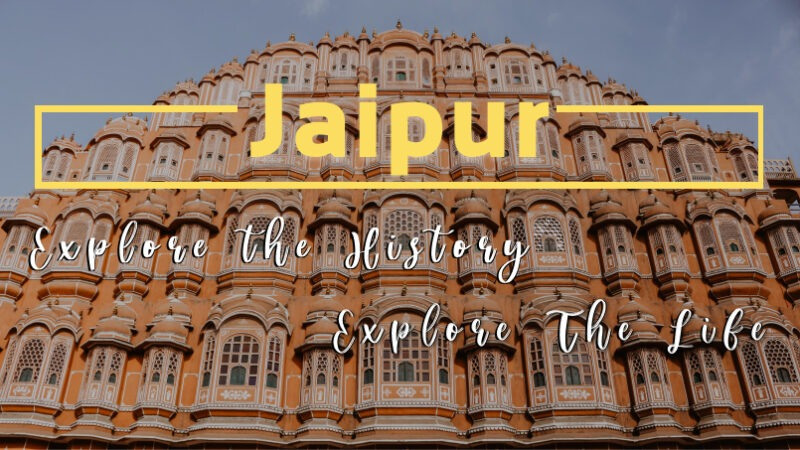
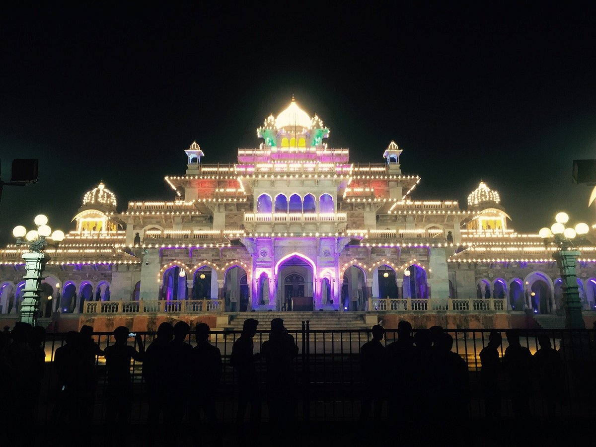
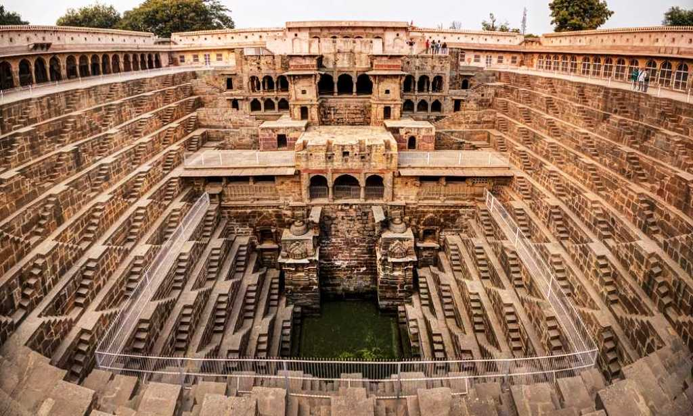
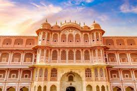
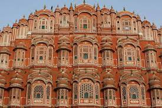
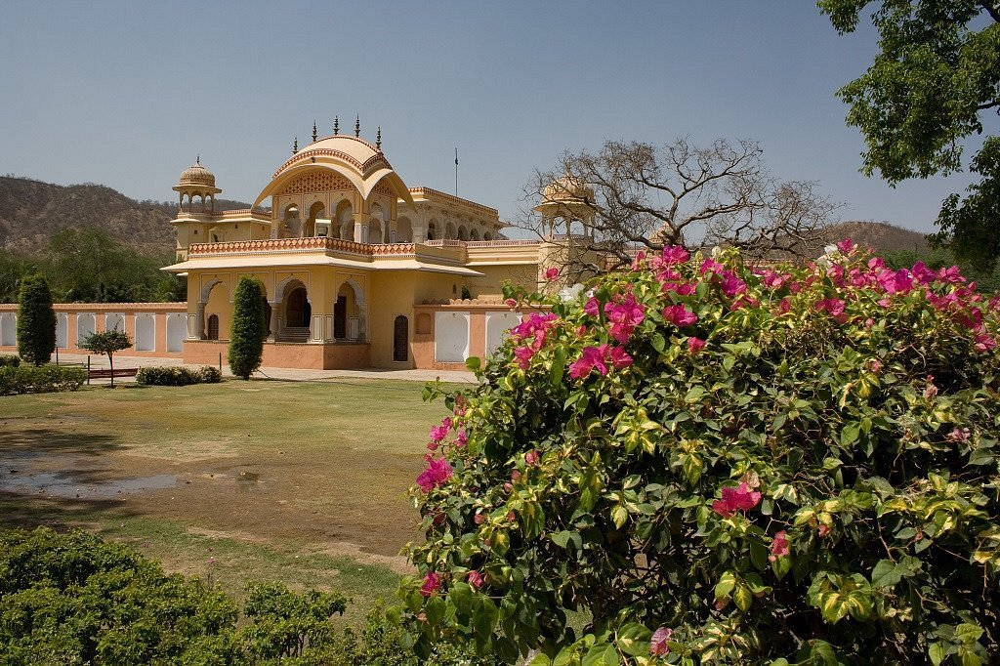
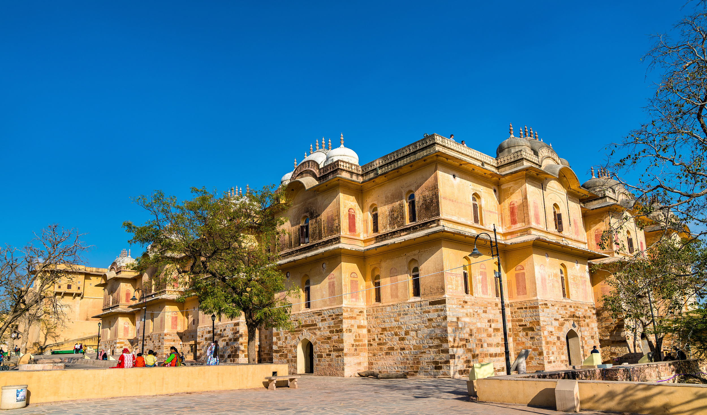

EXPLORE THE PLACES IN JAIPUR
ALBERT HALL MUSEUM

The Albert Hall Museum in Jaipur is the oldest museum of the state and functions as the state museum of Rajasthan, India. The building is situated in Ram Niwas garden outside the city wall opposite New gate and is a fine example of Indo-Saracenic architecture. It is also called the Government Central Museum.
ABHANERI

Abhaneri, also spelled Abaneri, is a village in the Dausa district of the Indian state of Rajasthan. Abhaneri is popular for the Chand Baori step well and Harshat Mata Temple.
AMBER FORT
 Amer Fort or Amber Fort is a fort located in Amer, Rajasthan, India. Amer is a town with an area of 4 square kilometres located 11 kilometres from Jaipur, the capital of Rajasthan. The town of Amer and the Amber Fort were originally built by Raja Man Singh and additions were, later, made by Sawai Jai Singh.
Amer Fort or Amber Fort is a fort located in Amer, Rajasthan, India. Amer is a town with an area of 4 square kilometres located 11 kilometres from Jaipur, the capital of Rajasthan. The town of Amer and the Amber Fort were originally built by Raja Man Singh and additions were, later, made by Sawai Jai Singh.
BIRLA TEMPLE
 Birla Mandir, Jaipur (Lakshmi Narayan Temple) is a Hindu temple located in Jaipur, India and is one of many Birla mandirs. It was built by the B.M. Birla Foundation in 1988 and is constructed solely of white marble. It is dedicated to the Hindu Goddess Lakshmi and Lord Vishnu (Narayan), whose images appear inside, along with other Hindu gods and goddesses and selections from the Gita and Upanishads. Festivals such as Diwali and Janamashtami are celebrated at the temple.
Birla Mandir, Jaipur (Lakshmi Narayan Temple) is a Hindu temple located in Jaipur, India and is one of many Birla mandirs. It was built by the B.M. Birla Foundation in 1988 and is constructed solely of white marble. It is dedicated to the Hindu Goddess Lakshmi and Lord Vishnu (Narayan), whose images appear inside, along with other Hindu gods and goddesses and selections from the Gita and Upanishads. Festivals such as Diwali and Janamashtami are celebrated at the temple.
BISALDEO TEMPLE
 Bisaldeo temple, also known as Bisaldev temple or Bisal Deoji's temple, is a Hindu temple in Bisalpur, India. It is located beside the Bisalpur Dam on the Banas River, in the Tonk district of Rajasthan state. The temple is dedicated to Gokarneshvara, an aspect of Shiva. A Monument of National Importance, it was commissioned by the 12th century Chahamana ruler Vigraharaja IV, who is also known as Bisal Deo.
Bisaldeo temple, also known as Bisaldev temple or Bisal Deoji's temple, is a Hindu temple in Bisalpur, India. It is located beside the Bisalpur Dam on the Banas River, in the Tonk district of Rajasthan state. The temple is dedicated to Gokarneshvara, an aspect of Shiva. A Monument of National Importance, it was commissioned by the 12th century Chahamana ruler Vigraharaja IV, who is also known as Bisal Deo.
CITY PALACE

City Palace has stood at the heart of the Old City of Jaipur for nearly three centuries, shortly after Maharaja Sawai Jai Singh II decided to relocate his court from the city of Amber. Protected by huge guard walls, the fairy-tale-like structure is still the home of Jaipur's modern-day royal family, and is more extravagant and enchanting than you might imagine.
GALTAJI
 Galtaji is an ancient Hindu pilgrimage about 10 km away from Jaipur, in the Indian state of Rajasthan. The site consists of a series of temples built into a narrow crevice in the ring of hills that surrounds Jaipur. A natural spring emerges high on the hill and flows downward, filling a series of sacred kunds (water tanks) in which pilgrims bathe. Visitors and pilgrims can ascend the crevasse, continuing past the highest water pool to a hilltop temple from there are views of Jaipur and its fortifications spreads out across the valley floor.
Galtaji is an ancient Hindu pilgrimage about 10 km away from Jaipur, in the Indian state of Rajasthan. The site consists of a series of temples built into a narrow crevice in the ring of hills that surrounds Jaipur. A natural spring emerges high on the hill and flows downward, filling a series of sacred kunds (water tanks) in which pilgrims bathe. Visitors and pilgrims can ascend the crevasse, continuing past the highest water pool to a hilltop temple from there are views of Jaipur and its fortifications spreads out across the valley floor.
HAWA MAHAL

If you had any preconceived notions about how the buildings in Jaipur look, they probably came from Hawa Mahal (Palace of Breeze). It has all of the distinctive architectural features that appear in postcards of the city, from the salmon-pink, honeycombed facade, built to resemble the crown of Hindu god Krishna, to the geometric accents and rows of tiny windows.
JAL MAHAL
 Jal Mahal (meaning "Water Palace") is a palace in the middle of the Man Sagar Lake in Jaipur city, the capital of the state of Rajasthan, India. The palace was originally constructed in 1699; the building and the lake around it were later renovated and enlarged in the 18th century by Maharaja Jai Singh II of Amber.
Jal Mahal (meaning "Water Palace") is a palace in the middle of the Man Sagar Lake in Jaipur city, the capital of the state of Rajasthan, India. The palace was originally constructed in 1699; the building and the lake around it were later renovated and enlarged in the 18th century by Maharaja Jai Singh II of Amber.
JAIGARH FORT
 If you had any preconceived notions about how the buildings in Jaipur look, they probably came from Hawa Mahal (Palace of Breeze). It has all of the distinctive architectural features that appear in postcards of the city, from the salmon-pink, honeycombed facade, built to resemble the crown of Hindu god Krishna, to the geometric accents and rows of tiny windows.
If you had any preconceived notions about how the buildings in Jaipur look, they probably came from Hawa Mahal (Palace of Breeze). It has all of the distinctive architectural features that appear in postcards of the city, from the salmon-pink, honeycombed facade, built to resemble the crown of Hindu god Krishna, to the geometric accents and rows of tiny windows.
JANTAR MANTAR
 At first glance, Jantar Mantar may look to be nothing more than a bunch of larger-than-life abstract sculptures. But this is not an art gallery–it's a special collection of astronomical tools started by Rajput ruler Jai Singh II to measure the heavens nearly 300 years ago.
At first glance, Jantar Mantar may look to be nothing more than a bunch of larger-than-life abstract sculptures. But this is not an art gallery–it's a special collection of astronomical tools started by Rajput ruler Jai Singh II to measure the heavens nearly 300 years ago.
KANAK VRINDAVAN

Kanak Vrindavan is a garden in Jaipur, the capital of Rajasthan. It is built in a valley surrounded by Aravali hills and is located on the way to the Amer Fort at the bottom of the Nahargarh hill. The place is approx 8 km north of the Jaipur city. The garden complex is having many nearby tourist attractions as the Amer fort Palace, Jaigarh fort and Nahargarh fort along with much lush greenery.
NAHARGARH FORT

Nahargarh Fort, situated on the outskirts of Jaipur, is known for breathtaking views of the city and for its extended wall that connects it to Jaigarh Fort. Embellished with delicate carvings and stonework, the Nahargarh Fort is an impregnable structure and together with its two neighbouring forts - Amer and Jaigarh once stood as the strong defence of Jaipur city.
RANTHAMBORE NATIONAL PARK
 Ranthambore National Park is a national park in Rajasthan, India, with an area of 1,334 km2 (515 sq mi). It is bounded to the north by the Banas River and to the south by the Chambal River. It is named after the historic Ranthambore Fort, which lies within the park.
Ranthambore National Park is a national park in Rajasthan, India, with an area of 1,334 km2 (515 sq mi). It is bounded to the north by the Banas River and to the south by the Chambal River. It is named after the historic Ranthambore Fort, which lies within the park.
SAMODE
 Samode Palace, Samode Haveli and Samode Bagh (Garden) are heritage monuments and structures built by the noble feudatory with the hereditary title of 'Maha Rawal' or 'Maha Saheb’ of the Amber and Jaipur principality in Rajasthan, India. All three have rich history of several hundred years and display a fusion of Mughal and Rajasthani art and architecture.
Samode Palace, Samode Haveli and Samode Bagh (Garden) are heritage monuments and structures built by the noble feudatory with the hereditary title of 'Maha Rawal' or 'Maha Saheb’ of the Amber and Jaipur principality in Rajasthan, India. All three have rich history of several hundred years and display a fusion of Mughal and Rajasthani art and architecture.
SANGANER
 Sanganer is a town/ Tehsil (an administrative division) situated in Jaipur district, Rajasthan, 16 km south of state capital Jaipur. Jaipur has been divided in 13 Sub divisions and Sanganer is one of these 13 Sub divisions. It is famous for textile printing, handmade paper industry, and for Jain temples. Sanganer prints are one of its own kinds, for the reason that patterns in bright colours are always printed on white backgrounds.
Sanganer is a town/ Tehsil (an administrative division) situated in Jaipur district, Rajasthan, 16 km south of state capital Jaipur. Jaipur has been divided in 13 Sub divisions and Sanganer is one of these 13 Sub divisions. It is famous for textile printing, handmade paper industry, and for Jain temples. Sanganer prints are one of its own kinds, for the reason that patterns in bright colours are always printed on white backgrounds.
SISODIA RANI PALACE AND GARDEN
 Sisodia Rani Garden and Palace is a palace garden 6 kilometres (3.7 mi) from Jaipur city in of Rajasthan state in India. It was built by Maharaja Sawai Jai Singh II in 1728. The place consists of tiered multi-level gardens with fountains, watercourses and painted pavilions. A double-storeyed palace occupies the top terrace of the garden. The palace has many galleries, pavilions and murals depicting scenes from the life of lord Krishna.
Sisodia Rani Garden and Palace is a palace garden 6 kilometres (3.7 mi) from Jaipur city in of Rajasthan state in India. It was built by Maharaja Sawai Jai Singh II in 1728. The place consists of tiered multi-level gardens with fountains, watercourses and painted pavilions. A double-storeyed palace occupies the top terrace of the garden. The palace has many galleries, pavilions and murals depicting scenes from the life of lord Krishna.
SARGASULI TOWER
 Sargasuli Tower or Isar Lat is a historical heritage monument situated near Tripolia Gate of City Palace in Jaipur. The seven tiered minaret is built in a fashion similar to that of Qutub Minar in Delhi and Kirti Stambh of Chittorgarh. The tower has a tiny entry with a spiralling staircase and every tier has a balcony outlet.
Sargasuli Tower or Isar Lat is a historical heritage monument situated near Tripolia Gate of City Palace in Jaipur. The seven tiered minaret is built in a fashion similar to that of Qutub Minar in Delhi and Kirti Stambh of Chittorgarh. The tower has a tiny entry with a spiralling staircase and every tier has a balcony outlet.